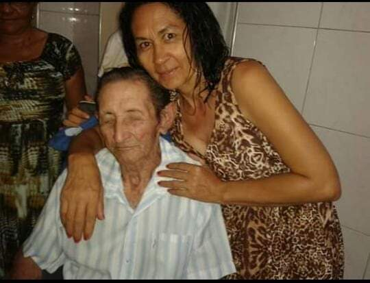

João Silva, um jovem marceneiro de São Paulo, casou-se com Ana Oliveira em 1925. Juntos, eles enfrentaram inúmeras adversidades, desde a Grande Depressão até a construção de uma vida estável em meio às dificuldades. João abriu sua própria oficina de marcenaria e, com o apoio incansável de Ana, a família prosperou e deixou um legado duradouro na comunidade local.
Maria Fernandes e a Segunda Guerra Mundial
Maria Fernandes, nascida em 1925, tornou-se uma figura icônica na medicina comunitária. Durante a Segunda Guerra Mundial, ela se voluntariou como enfermeira, oferecendo suporte vital aos soldados feridos. Após a guerra, Maria retornou ao Brasil e fundou uma clínica de saúde que serviu à comunidade por mais de 40 anos, tornando-se uma inspiração para as gerações seguintes.
A Pioneira na Educação: Clara de Souza

Clara de Souza em frente à escola que fundou
Clara de Souza nasceu em 1905 e foi uma das primeiras mulheres a se formar em pedagogia na sua cidade. Em 1930, ela fundou uma escola para crianças carentes, oferecendo educação gratuita e de qualidade. Clara lutou contra preconceitos e dificuldades financeiras, mas sua determinação garantiu que muitas crianças tivessem acesso à educação. Sua escola permanece em funcionamento até hoje, um testemunho do impacto duradouro de sua dedicação e paixão pelo ensino.